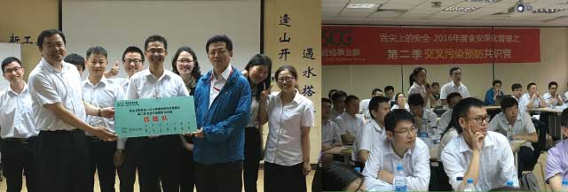
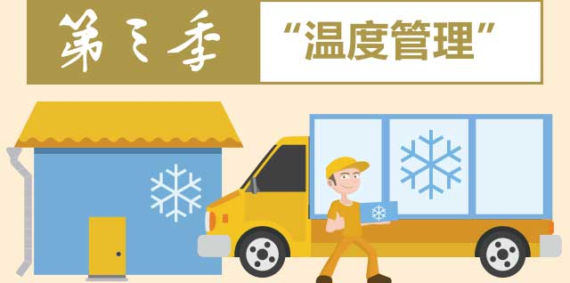
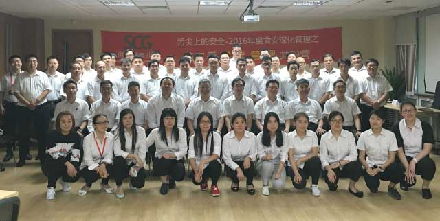
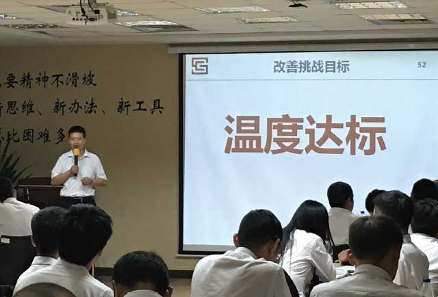
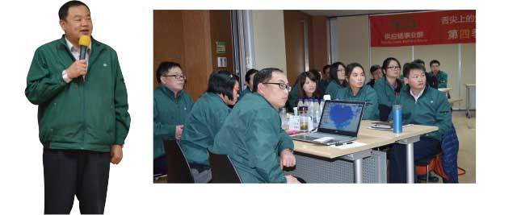
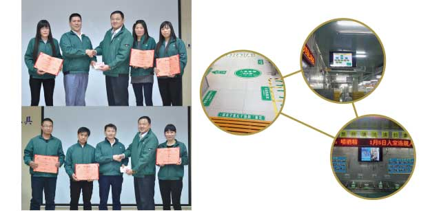
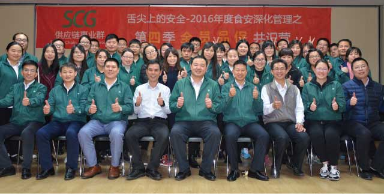

“服务，以顾客惊讶，取代顾客满意”是供应链群功能价值的展示，正是有着这样明确的目标，所以每一起客诉对供应链事业群而言都是食安工作精进的动力；每一起客诉的反馈，都是事业部不断精进的方向。交流共识期间，供应链群食安中心李玉峰经理向同仁们清晰讲解了《2015年度全国客诉分析》，得出虫害、毛发和异物是客诉降低的关键要素，客诉改善不能平均用力，而是要注重抓重要原因和关键环节，做到突破重点带动全局。
供应链事业群运用创新思维工具——六顶思考帽，使混乱的思维变得更清晰，让每个人变得更富有创造、趣味性。——“虫害”防治，蔬菜原物料由净菜取代虫害严重的毛菜（净菜使用比例由2015年17%提升到2016年底42%）；生产区域粘蝇纸夏季从2周1次调整为1周1次；门户管理封闭性稽核由1次/日稽核增加到3次/日；泡沫灌注增加调理、包装下水道和墙角每月2次。
——“毛发”管控，清洁区人员每隔0.5H互检并进行粘滚，每2H巡视检查一次作业中人员的毛发防护情况。
——“异物”监管，前十大异物供应商约谈，效果跟踪显示工厂第三季度异物下降24%。
交叉污染”涉及从原料到成品的所有环节，只有生产单位的员工团队协作、相互配合才能实现交叉污染的预防。
为了实现上述目标，需要我们拥有良好的操作规范以及通过不断强化训练培养而成的行为准则，而 实现PDCA不断盘旋而上的循环。基于此，供应链事业群引入CEPI管理体系——Customer and Efficiency Process Improvement（顾客与效益导向流程诊断与改善），并邀请到何执行长为我们系统地讲解了CEPI体系本质内涵以及工厂应用方式、方法，从而让大家深刻领悟到“流程的诊断与改善”是操作执行的首要条件。
活动的最后，供应链事业群的生产单位以“交叉污染预防”为核心，先后在“人员入室管理”、“物料分类摆放”、“车间流程改造”等方面进行案例分享并展示改善成果：原料微生物及致病菌筛查未检出；累积5月微生物合格率96.98%，同比增长1.8%。
温度是制约“低温冷藏膳食”生产、运输的关键因素，在夏季显得尤为突出。为落实全过程温度标准，低温配送率先实行全程温度实时在线监控，生产及仓储部门也积极响应，取得了阶段性进展，于2016年底完成上海区域关键部室温度24小时在线管理。
为确保温度符合管理标准，供应链事业群群策群力、积极行动，迈出了实质性步伐：车间硬体改善陆续开展，2015年至今投资1080万元、总计整改项目达37项。例如顶甄出货区暂存冷藏库更改为冷冻库，以使成品中心温度在1小时内可以快速下降2℃，满足成品出货前中心温度在10℃以下的标准要求；顶发蔬菜处理室安装制冷风机，岩棉库板更换为10cm聚氨酯，使部室温度从28℃将至≤15℃，从而符合温度标准。
正所谓“群众利益无小事，食品安全是大事”， 在消费者维权意识日渐增加的大背景下，食品安全已成食品生产、销售单位的核心竞争力。
“食品安全不是检测出来的，是生产出来的”， 正是基于这个先进的理念，供应链事业群全员参与、通力合作，誓言打造“食安2.0”时代。变革的旅途中可能困难重重，为了充分展示重视食安的决心以及对食安变革的支持，顶鸿公司率先组织推动“员工提案活动”，若提案被采纳，现场奖励与表扬，总计颁发现金2万元。亦如秦国变法之初，商鞅通过搬木头悬赏百金获得公众的信服和信心，活动现场播放了＂徙木立信＂的视频，场面震撼人心。从员工们的眼神中，可以看出他们被片中秦国改革的决心所打动，因公司食安变革的决意而动容。
各事业部纷纷呈现各自提案报告，分别在“清净废水再利用”、“设备升级减工时”、“工艺调整降客诉”方面进行改善，总计节约61324元/年，西兰花菜虫客诉率也由1-9月15起降低至10-11月0起；在“员工入室引导标识”、“车间现场宣贯视频”等板块进行改进，从这些付诸实践的行动中，我们感受到了大家坚定食安意识的决心。
